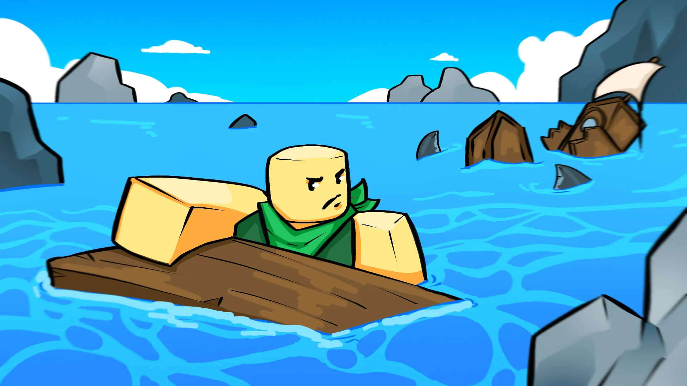
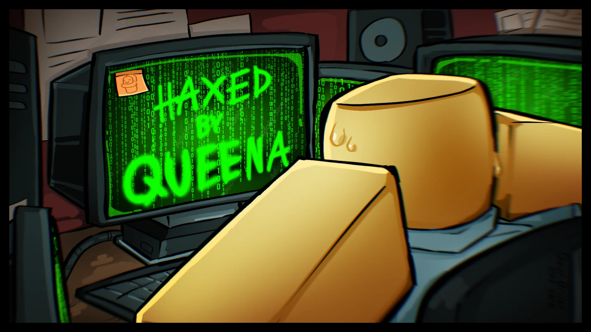
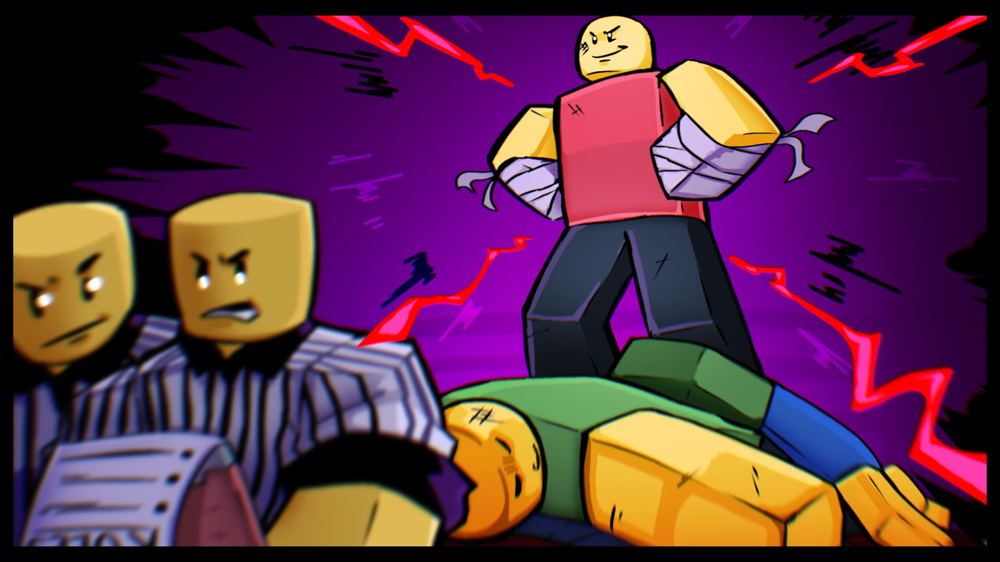
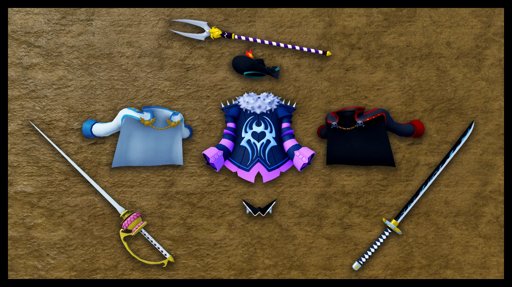
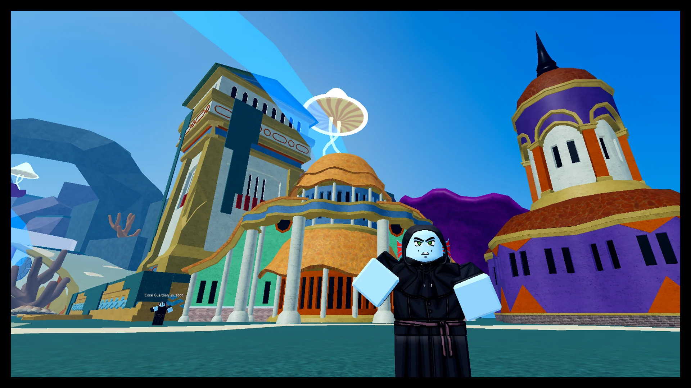

The Blox Bulletin
Toutes nos excuses pour l'interruption, retour aux nouvelles normales.
À propos des interruptions de la semaine dernière...

L'édition de la semaine dernière du Blox Bulletin a été retardée de manière inattendue suite à une faille de sécurité liée à un individu connu en ligne sous le nom de Doghouse Frank. L'interruption a été rapidement prise en charge, et les opérations de publication régulières ont repris.
Dans le sillage de cet incident, l'équipe du Bulletin a pris le temps de passer en revue les retours de la communauté. Un point d'intérêt récurrent était la réaction positive aux sneak peeks en temps réel. La plupart des gens ont apprécié que le blog change de format pour montrer de véritables avancées en jeu, plutôt que des histoires constamment inventées.
Bien que de telles révélations ne soient pas incluses dans chaque numéro, ces instantanés de développement seront partagés dès que l'équipe du Bulletin pourra obtenir du matériel fiable depuis les coulisses.
Le Challenger Mystérieux : Démasqué !
Par Lenny Lefthook
Il y a quelques semaines, une histoire a émergé à propos d'un combattant capable de transformer la punition en puissance. Il était connu pour encaisser les coups afin de revenir encore plus fort. Maintenant, il fait la une après avoir remporté un combat en mêlée générale à 20 personnes lors du récent Brawler Summit. Cependant, l'homme a été disqualifié du prize pool d'un million de dollars suite à des soupçons d'endurance anormale.
Les officiels affirment qu'il se battait à l'aide d'un fruit puissant : une nouvelle avancée du Fruit Pain.
Ce rework embrasse une philosophie brutale : les dégâts encaissés alimentent un compteur de douleur qui se renforce à chaque coup. À mesure que la souffrance de l'utilisateur s'intensifie, une aura rose-rougeâtre commence à pulser et à flamboyer, récompensant les coups précis tout en drainant le pouvoir des attaques manquées.
Au bord de la défaite, Last Stand s'active, faisant remonter l'utilisateur dans un état volatile avec un compteur plein et une courte fenêtre pour libérer une puissance maximale avant de s'épuiser complètement. Le combattant en question a depuis été définitivement banni de l'Ultra Fighting Committee, citant un « avantage physique inéquitable » et la nature non réglementée des capacités qu'il a affichées.
Épées & Accessoires : Un Regard Approfondi sur les Reworks
Par l'Équipe de Développement
Bonjour à tous ! Nous avons travaillé dur dans les coulisses pour insuffler une nouvelle vie à certaines des armes et des accessoires les plus anciens du jeu. Aujourd'hui, nous sommes ravis de vous donner un premier aperçu de quelques-uns des reworks d'épées et d'accessoires à venir dans la prochaine mise à jour !
Notre objectif avec ces reworks est de rendre votre équipement bien plus stylé et moderne. Que ce soient des épées ou des accessoires, tout ce avec quoi vous avez commencé est en cours de redesign pour mieux correspondre à la qualité et au style modernes de Blox Fruits. Nous voulons que vos tenues soient plus attrayantes pendant vos aventures !
Ce que vous voyez aujourd'hui n'est qu'une partie de la gamme complète. J'espère que cela vous donne un aperçu de ce sur quoi nous travaillons et du type de changements à venir en matière d'accessoires.
Retour au Grand Bleu
Je devais y retourner. Quelque chose à propos de cette île... ses ruines, son silence, ses gardiens... ça continuait de résonner dans mon esprit. Alors, sans le Chef cette fois, j'ai fait le voyage à nouveau. Je voulais voir par moi-même ce qui se trouvait là en bas.
Ce qui aurait dû être un simple morceau de pierre et de sable oublié ne l'était absolument pas. Les ruines antiques subsistent, mais maintenant plus vivantes que jamais. Des Fishmen patrouillent le périmètre avec détermination, et plus profondément dans les rues couvertes de coraux, des cultistes en robes rôdent dans les ombres. Je n'arrivais pas à distinguer leurs visages... mais j'entendais leurs voix.
Des murmures. Ils répétaient quelque chose encore et encore à voix basse. Quelque chose à propos d'une relique toute-puissante...?
Je n'ai pas vraiment saisi, mais mon instinct me criait de ne pas tenter ma chance. Avant de partir, j'ai réussi à prendre une photo rapprochée de l'île. Étudiez-la attentivement, lecteurs. Cet endroit n'est plus simplement un mystère archéologique — il est actif. Il est gardé. Et quelque chose me dit... nous ne sommes pas censés être ici.
